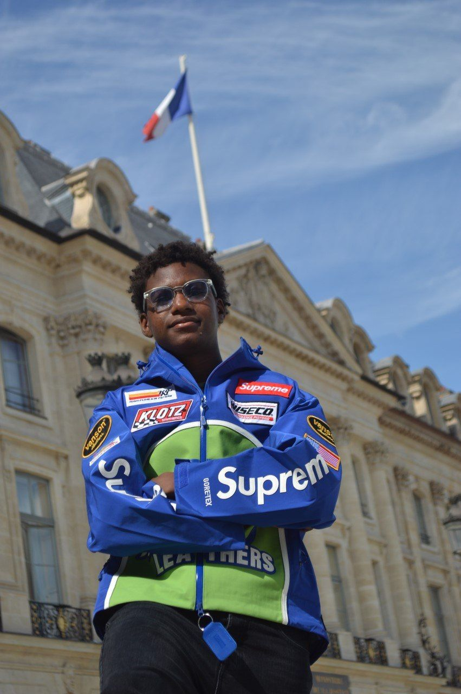

01Place Vendôme11 images 02Louvre11 images
02Louvre11 images
 03Bord de terrain14 images
03Bord de terrain14 images
 04Noir & blanc6 images
04Noir & blanc6 images
Portfolio 2026
Des portraits, de la mode et du football. Partout, la même attention aux attitudes, aux matières et à la lumière.
- 42Photographies
- 4Séries
- 2Villes · Paris, Tallinn
Série 01Paris
Place Vendôme
Paris. Une veste bleue, la pierre blonde et le plein soleil.
Série 02Paris
Au Louvre
Paris. Cuir noir, bonnet camel et grandes portes grises.
Série 03Tallinn
Bord de terrain
Tallinn. Un jour de match au bord de la pelouse du Kalju FC.
Série 04Paris · Tallinn
Noir & blanc
Sans la couleur, il reste le geste et la lumière.
À propos
Derrière l’objectif
Joyce photographie les gens, en pose comme en pleine action : un modèle adossé aux pierres du Louvre, une veste bleue sous le soleil de la place Vendôme, un gardien qui plonge un jour de match à Tallinn.
D’une série à l’autre, la même attention aux attitudes, aux matières et à la lumière.
Contact
Un portrait, une série, un match à couvrir ?
Coordonnées bientôt en ligne.